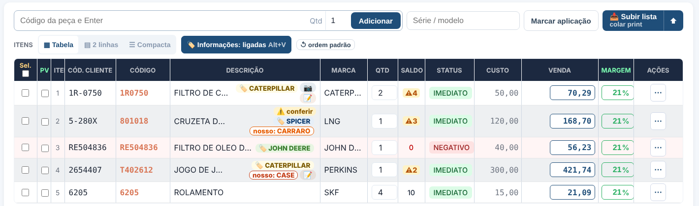
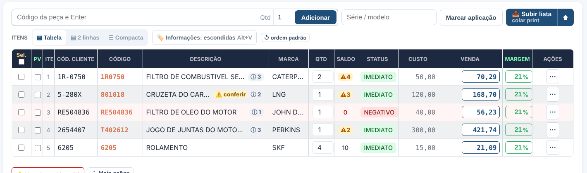
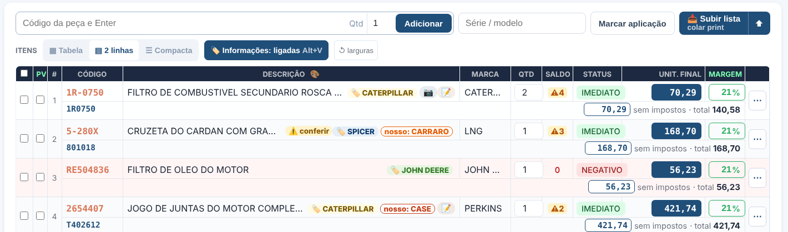
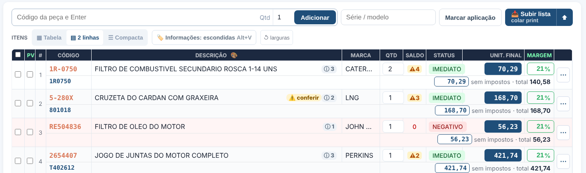

🏷️ Informações da cotação — ligadas × escondidas
Botão "🏷️ Informações" na barra dos itens ou Alt+V (Option+V no Mac). Fica salvo pra cada vendedor. Os alertas (⚠️ conferir, falta a capa do conjunto, confirmar a relação) aparecem sempre.
1 · Tabela — LIGADAS — 🏷️ linha do código do cliente (cheia) + "nosso: X" (contornada) quando o nosso código é de outra linha · 📷 foto · 📝 observação · ⚠️ conferir. A descrição corta com "…" e as etiquetas descem pra baixo, nunca são cortadas.

2 · Tabela — ESCONDIDAS — a descrição volta inteira; cada item mostra só "ⓘ N" (mouse em cima = a lista do que está escondido; clique = liga de novo). O ⚠️ conferir continua.

3 · 2 linhas — LIGADAS

4 · 2 linhas — ESCONDIDAS
